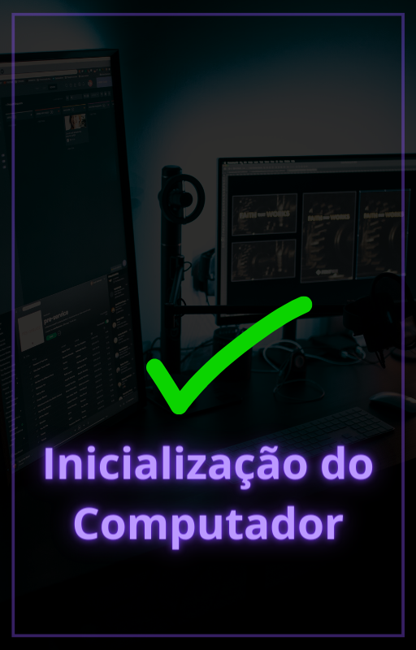
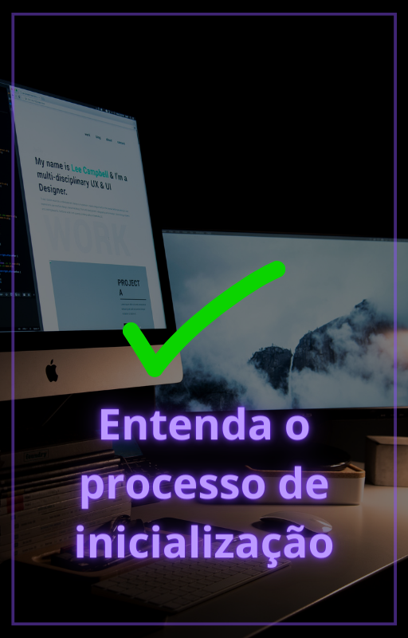
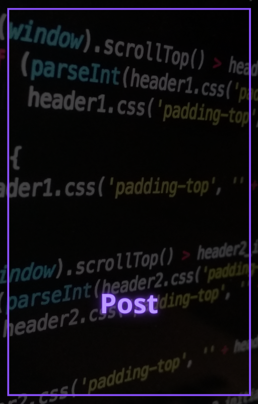

Você já se perguntou o que acontece nos bastidores quando você liga o seu computador? A fase inicial do processo de inicialização é conhecida como POST, que significa Power-On Self-Test (Auto-Teste de Energização). Ela desempenha um papel crucial no funcionamento adequado do seu sistema.
Vamos explorar o que acontece durante esta fase crítica da inicialização do computador.